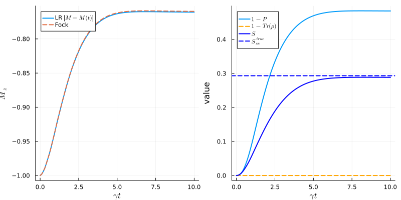

Low Rank Master Equation
We start by importing the packages
using Plots
using LaTeXStrings
using QuPhys;Define lattice
Nx, Ny = 2, 3
latt = Lattice(Nx=Nx, Ny=Ny)Lattice{Int64, LinearIndices{2, Tuple{Base.OneTo{Int64}, Base.OneTo{Int64}}}, CartesianIndices{2, Tuple{Base.OneTo{Int64}, Base.OneTo{Int64}}}}(2, 3, 6, [1 3 5; 2 4 6], CartesianIndices((2, 3)))Define lr-space dimensions
N_cut = 2 # Number of states of each mode
N_modes = latt.N # Number of modes
N = N_cut^N_modes # Total number of states
M = Nx*Ny+1 # Number of states in the LR basis7Define lr states. Take as initial state all spins up. All other N states are taken as those with miniman Hamming distance to the initial state.
ϕ = Vector{QuantumObject{Vector{ComplexF64}, KetQuantumObject}}(undef, M)
ϕ[1] = kron(repeat([basis(2,0)],N_modes)...)
global i=1
for j in 1:N_modes
global i+=1
i<=M && (ϕ[i] = mb(sp, j, latt) * ϕ[1])
end
for k in 1:N_modes-1
for l=k+1:N_modes
global i+=1
i<=M && (ϕ[i] = mb(sp, k, latt) * mb(sp, l, latt) * ϕ[1])
end
end
for i in i+1:M
ϕ[i] = QuantumObject(rand(ComplexF64,size(ϕ[1])[1]), dims=ϕ[1].dims)
normalize!(ϕ[i])
endDefine the initial state
z = hcat(broadcast(x->x.data, ϕ)...)
p0 = 0. # Population of the lr states other than the initial state
B = Matrix(Diagonal([1+0im; p0 * ones(M-1)]))
S = z'*z # Overlap matrix
B = B / tr(S*B) # Normalize B
ρ = QuantumObject(z*B*z', dims=ones(Int,N_modes)*N_cut); # Full density matrixQuantum Object: type=Operator dims=[2, 2, 2, 2, 2, 2] size=(64, 64) ishermitian=true
64×64 Matrix{ComplexF64}:
1.0+0.0im 0.0+0.0im 0.0+0.0im … 0.0+0.0im 0.0+0.0im 0.0+0.0im
0.0+0.0im 0.0+0.0im 0.0+0.0im 0.0+0.0im 0.0+0.0im 0.0+0.0im
0.0+0.0im 0.0+0.0im 0.0+0.0im 0.0+0.0im 0.0+0.0im 0.0+0.0im
0.0+0.0im 0.0+0.0im 0.0+0.0im 0.0+0.0im 0.0+0.0im 0.0+0.0im
0.0+0.0im 0.0+0.0im 0.0+0.0im 0.0+0.0im 0.0+0.0im 0.0+0.0im
0.0+0.0im 0.0+0.0im 0.0+0.0im … 0.0+0.0im 0.0+0.0im 0.0+0.0im
0.0+0.0im 0.0+0.0im 0.0+0.0im 0.0+0.0im 0.0+0.0im 0.0+0.0im
0.0+0.0im 0.0+0.0im 0.0+0.0im 0.0+0.0im 0.0+0.0im 0.0+0.0im
0.0+0.0im 0.0+0.0im 0.0+0.0im 0.0+0.0im 0.0+0.0im 0.0+0.0im
0.0+0.0im 0.0+0.0im 0.0+0.0im 0.0+0.0im 0.0+0.0im 0.0+0.0im
⋮ ⋱
0.0+0.0im 0.0+0.0im 0.0+0.0im … 0.0+0.0im 0.0+0.0im 0.0+0.0im
0.0+0.0im 0.0+0.0im 0.0+0.0im 0.0+0.0im 0.0+0.0im 0.0+0.0im
0.0+0.0im 0.0+0.0im 0.0+0.0im 0.0+0.0im 0.0+0.0im 0.0+0.0im
0.0+0.0im 0.0+0.0im 0.0+0.0im 0.0+0.0im 0.0+0.0im 0.0+0.0im
0.0+0.0im 0.0+0.0im 0.0+0.0im 0.0+0.0im 0.0+0.0im 0.0+0.0im
0.0+0.0im 0.0+0.0im 0.0+0.0im … 0.0+0.0im 0.0+0.0im 0.0+0.0im
0.0+0.0im 0.0+0.0im 0.0+0.0im 0.0+0.0im 0.0+0.0im 0.0+0.0im
0.0+0.0im 0.0+0.0im 0.0+0.0im 0.0+0.0im 0.0+0.0im 0.0+0.0im
0.0+0.0im 0.0+0.0im 0.0+0.0im 0.0+0.0im 0.0+0.0im 0.0+0.0imDefine the Hamiltonian and collapse operators
# Define Hamiltonian and collapse operators
Jx = 0.9
Jy = 1.04
Jz = 1.
hx = 0.
γ = 1
Sx = sum([mb(sx, i, latt) for i in 1:latt.N])
Sy = sum([mb(sy, i, latt) for i in 1:latt.N])
Sz = sum([mb(sz, i, latt) for i in 1:latt.N])
SFxx = sum([mb(sx, i, latt) * mb(sx, j, latt) for i in 1:latt.N for j in 1:latt.N])
H, c_ops = TFIM(Jx, Jy, Jz, hx, γ, latt; bc=pbc, order=1)
e_ops = (Sx,Sy,Sz,SFxx)
tl = LinRange(0,10,100);100-element LinRange{Float64, Int64}:
0.0, 0.10101, 0.20202, 0.30303, 0.40404, …, 9.69697, 9.79798, 9.89899, 10.0Full evolution
@time mesol = mesolve(H, ρ, tl, c_ops; e_ops=[e_ops...]);
A = Matrix(mesol.states[end].data)
λ = eigvals(Hermitian(A))
Strue = -sum(λ.*log2.(λ))/latt.N;0.2932472807173781Low Rank evolution
Define functions to be evaluated during the low-rank evolution
function f_purity(p,z,B)
N = p.N
M = p.M
S = p.S
T = p.temp_MM
mul!(T, S, B)
tr(T^2)
end
function f_trace(p,z,B)
N = p.N
M = p.M
S = p.S
T = p.temp_MM
mul!(T,S,B)
tr(T)
end
function f_entropy(p,z,B)
C = p.A0
σ = p.Bi
mul!(C, z, sqrt(B))
mul!(σ, C', C)
λ = eigvals(Hermitian(σ))
λ = λ[λ.>1e-10]
return -sum(λ .* log2.(λ))
end;f_entropy (generic function with 1 method)Define the options for the low-rank evolution
opt = LRMesolveOptions(
alg = Tsit5(),
err_max = 1e-3,
p0 = 0.,
atol_inv = 1e-6,
adj_condition="variational",
Δt = 0.
);
@time lrsol = lr_mesolve(H, z, B, tl, c_ops; e_ops=e_ops, f_ops=(f_purity, f_entropy, f_trace,), opt=opt);LRTimeEvolutionSol{Vector{Float64}, Vector{Base.ReshapedArray{ComplexF64, 2, SubArray{ComplexF64, 1, Vector{ComplexF64}, Tuple{UnitRange{Int64}}, true}, Tuple{}}}, Matrix{ComplexF64}, Vector{Int64}}([10.0], Base.ReshapedArray{ComplexF64, 2, SubArray{ComplexF64, 1, Vector{ComplexF64}, Tuple{UnitRange{Int64}}, true}, Tuple{}}[[0.9764890016355225 - 0.0062213607558759595im -1.2543410842959831e-6 - 1.437722349769694e-6im … 7.416930588668585e-7 + 1.2632325806518832e-5im 0.00011166529517586396 - 7.57511750984613e-5im; 0.0003841620799040429 - 0.0005257627995724426im 0.00265683564853065 - 0.01158387510236613im … 0.0005330894149675649 - 0.024900507288810162im 0.035569086856045144 - 0.0018453951903497107im; … ; -0.00026897484903700726 + 0.0003266716968986422im -0.012672867461566862 - 0.004889758778428136im … 0.006838241780049046 + 0.008169184686345574im -0.00289439852638008 + 0.01613585163971464im; 0.002541340191031157 - 0.006009294075473127im 3.266729454804616e-6 - 2.05155649311892e-6im … 3.910431295383658e-5 - 0.00024255169310783277im -5.979865074247798e-5 + 1.4061454925126766e-5im]], Base.ReshapedArray{ComplexF64, 2, SubArray{ComplexF64, 1, Vector{ComplexF64}, Tuple{UnitRange{Int64}}, true}, Tuple{}}[[0.6668594851997123 + 2.7883672073953124e-25im 1.7390933957852775e-6 - 1.7954582863602518e-7im … 2.8991767797124274e-5 - 2.7107498224088006e-5im 1.2855592277423977e-5 - 9.462046247002743e-6im; 1.7390933957852775e-6 + 1.7954582863602518e-7im 0.04056977280863909 + 1.6963607269859683e-26im … -1.9985476568441644e-5 - 1.248634140638027e-5im 2.9279889797594145e-5 - 3.29459986016189e-5im; … ; 2.8991767797124274e-5 + 2.7107498224088006e-5im -1.9985476568441644e-5 + 1.248634140638027e-5im … 0.000329793933624461 + 1.3789810449212607e-28im 2.2612905745150775e-6 - 2.2551363239790836e-6im; 1.2855592277423977e-5 + 9.462046247002743e-6im 2.9279889797594145e-5 + 3.29459986016189e-5im … 2.2612905745150775e-6 + 2.2551363239790836e-6im 0.0003244726744808459 + 1.3567310434930513e-28im]], ComplexF64[0.0 + 0.0im 0.0 + 0.0im … 1.8358006746627213e-5 + 1.2872789761827057e-18im 1.7992829766318115e-5 - 1.5315762862267931e-18im; 0.0 + 0.0im 0.0 + 0.0im … -2.6558428598405775e-5 - 2.9815406170711657e-19im -2.605303899245136e-5 - 1.5993135643953193e-18im; -6.0 + 0.0im -5.987982183320124 - 1.351016983448777e-19im … -4.564620346156668 - 4.4235448637409203e-17im -4.564698392977307 + 2.732189474663847e-17im; 6.0 + 0.0im 6.013514592694437 - 3.299481323349554e-17im … 8.151186838710352 + 1.4155343563971673e-15im 8.151087281165196 + 1.210882015860509e-15im], ComplexF64[1.0 + 0.0im 0.9995913405809307 - 2.309519235410732e-39im … 0.5164496216943768 + 1.2107988133424621e-17im 0.5164718839862354 + 2.7926878071778032e-18im; -0.0 + 0.0im 0.0031973769106007246 + 0.0im … 1.7312902983748573 + 0.0im 1.7312103182841927 + 0.0im; 1.0 + 0.0im 1.0000000000000007 + 8.081523661903227e-39im … 1.0000000000000004 + 1.0703264762038688e-26im 1.0000000000000002 - 9.744009901289938e-26im], [7, 7, 7, 7, 7, 7, 7, 8, 15, 17 … 35, 35, 35, 35, 35, 35, 35, 35, 35, 35])Plot the results
fig = plot(layout=(1,2), size=(800,400), legend=:topleft, xlabel=L"\gamma t")
m_me = real(mesol.expect[3,:])/Nx/Ny
m_lr = real(lrsol.expvals[3,:])/Nx/Ny
plot!(fig[1], tl, m_lr, label=raw"LR $[M=M(t)]$", lw=2)
plot!(fig[1], tl, m_me, ls=:dash, label="Fock", lw=2)
ylabel!(fig[1], L"M_{z}")
plot!(fig[2], tl, 1 .-real(lrsol.funvals[1,:]), label=L"$1-P$", lw=2)
plot!(fig[2], tl, 1 .-real(lrsol.funvals[3,:]), c=:orange, label=L"$1-\rm{Tr}(\rho)$", lw=2, ls=:dash)
plot!(fig[2], tl, real(lrsol.funvals[2,:])/Nx/Ny, c=:blue, label=L"S", lw=2)
hline!(fig[2], [Strue], c=:blue, ls=:dash, lw=2, label=L"S^{\rm \,true}_{\rm ss}")
ylabel!(fig[2], "value")
xlabel!(fig[2], L"\gamma t")